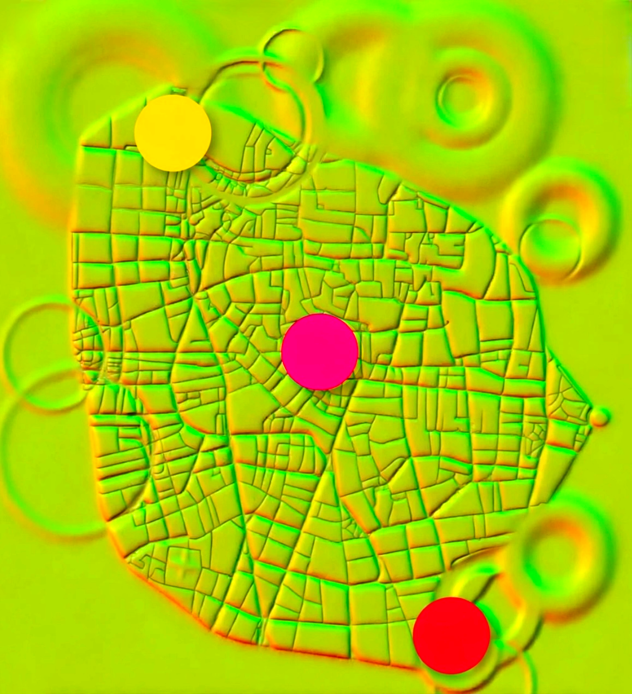

BIENNAL DE VALÈNCIA
CIUTAT VELLA OBERTA
BIENNAL de
VALENCIA
CIUTAT VELLA OBERTA

CIRCUITO DE TALLERES 2026
Circuito del Arte
20, 21 y 22 de noviembre 2026
Ven al encuentro con el Arte!
Acceso libre y gratuito · 20, 21 y 22 de noviembre 2026
BIENNAL de
VALENCIA
CIUTAT VELLA OBERTA
Nombre del Espacio
Artistas / Categoría
📍 Dirección del espacio
Descripción del Espacio
-
Horario de Apertura
-
🌐 -
✉️ -
📱 -
BIENNAL de
VALENCIA
CIUTAT VELLA OBERTA
Agenda Biennal
20, 21 y 22 de noviembre 2026
20
VIE
21
SÁB
22
DOM
ART A LA LLUM - VISITAS GUIADAS
Visitas guiadas: Encuentro en los talleres de artista. Recorrido conjunto y aproximación a la creación artística.
Acceso libre y gratuito.
BIENNAL de
VALENCIA
CIUTAT VELLA OBERTA
Programa de Talleres
20, 21 y 22 de noviembre 2026
20
VIE
21
SÁB
22
DOM
CIRCUITO DE ESTUDIOS Y TALLERES ABIERTOS
Información detallada sin resumir. Solo se muestran los talleres y espacios abiertos en la jornada seleccionada.